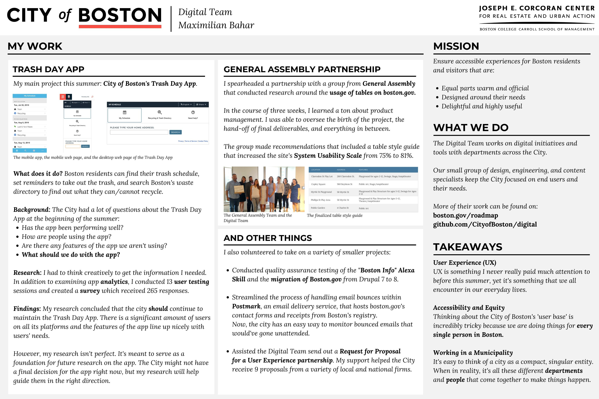

Max Bahar
Student at Boston College

Hey there! My name is Max and I am a Junior at Boston College majoring in Economics and Computer Science. I grew up in Jakarta, Indonesia and have just gotten back from a semester abroad at UCL. I am also looking for a summer job! You can take a look at my resume here. Here are some things I've been up to:
Personal Energy Use and Carbon Emissions Project
October 2019
A part of the Sustainable Energy course at UCL, I calculated my personal energy expenditures and carbon emissions. View the report or take a look at the data.
Powerpoint presented in class.
Summer with the City of Boston
June 2019
Through the Corcoran Center Summer Internship, I spent 10 weeks working on a variety of projects with the City of Boston's Digital Team. Many of which were User Experience and accessibility-focused. Read about the full program here.

A poster I designed for my final presentation.